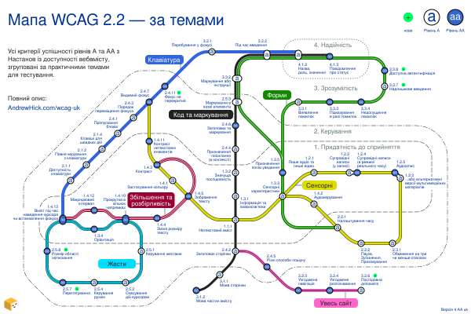

This is an extract of the Ukrainian WCAG map page published on AndrewHick.com/wcag-uk. Copy and paste the following code into the main page HTML files.
↓ START OF CODE TO COPY ↓
Мапа WCAG 2.2 — за темами
Ця діаграма групує всі критерії успішності з Настанов із доступності вебвмісту (WCAG) за темами, у версії 2.2, рівнів A та AA.
Вона ілюструє практичні зв'язки між кожним з критеріїв, які можуть бути непомітними в офіційних назвах настанов. Наприклад, усі критерії, які можна протестувати за допомогою лише клавіатури, розташовані на одній лінії. Структура значною мірою базується на «дереві рішень WCAG» (WCAG decision tree), яке містить детальну інформацію про те, як тестувати кожен критерій.
Мапа

Опис
Мапа нагадує схему метро, показуючи 55 критеріїв успішності як станції на 7 лініях.
Кожен маркер станції показує, чи є критерій рівнем A чи AA. Чотири принципи WCAG зображені як зони, що розходяться від центру тонкими пунктирними лініями:
- 1.x.x — Придатність до сприйняття (ці станції найближчі до центру);
- 2.x.x — Керування;
- 3.x.x — Зрозумілість;
- 4.x.x — Надійність (ці станції найвіддаленіші від центру).
Кожна лінія детально описана в наступних розділах. Назви деяких критеріїв дещо спрощені.
Клавіатура
Ці критерії забезпечують передбачувану роботу функціоналу лише за допомогою клавіатури, з видимим станом фокусу.
Cуцільна синя лінія. Пролягає із заходу на північ.
| Номер | Критерій успішності | Рівень | Переходи |
|---|---|---|---|
| 1.4.13 | Вміст під час наведення курсора чи встановлення фокуса | AA | |
| 2.1.1 | Доступність клавіатури | A | немає |
| 2.1.2 | Повне керування з клавіатури | A | немає |
| 2.1.4 | Клавіші для швидких дій | A | немає |
| 2.4.1 | Пропускання блоків | A | немає |
| 2.4.3 | Порядок переміщення фокуса | A | немає |
| 2.4.7 | Видимий фокус | AA | |
| 2.4.11 | Фокус не перекритий нове | AA | немає |
| 3.2.1 | Перебування у фокусі | A | немає |
| 3.2.2 | Під час введення | A | |
| 4.1.2 | Назва, роль, значення | A |
Збільшення та розбірливість
Ці критерії гарантують, що текст:
- розбірливий при масштабуванні або зміні інтервалів;
- збережений як текст, а не просто як зображення;
- контрольований, коли він з'являється при наведенні або фокусі.
Темно-червона лінія з двома внутрішніми білими лініями. Пролягає на захід від центру.
| Номер | Критерій успішності | Рівень | Переходи |
|---|---|---|---|
| 1.4.3 | Контраст | AA | |
| 1.4.5 | Зображення тексту | AA | |
| 1.4.4 | Зміна розміру тексту | AA | немає |
| 1.4.10 | Прокрутка в кількох напрямках | AA | |
| 1.4.12 | Міжрядковий інтервал | AA | немає |
| 1.4.13 | Вміст під час наведення курсора чи встановлення фокуса | AA |
Сенсорні
Ці критерії запобігають залежності вмісту від окремих органів чуття шляхом:
- забезпечення достатнього контрасту;
- Відмови від покладання лише на зір, колір, слух або час;
- уникнення відволікаючих аудіо - чи відеоелементів.
Жовта лінія з чорною рамкою. Простягається переважно з північного заходу на схід та утворює кільце від пункту «Сенсорні характеристики» і далі.
| Номер | Критерій успішності | Рівень | Переходи |
|---|---|---|---|
| 2.4.7 | Видимий фокус | AA | |
| 1.4.11 | Контраст нетекстових елементів | AA | немає |
| 1.4.3 | Контраст | AA | |
| 1.4.1 | Застосування кольору | A | немає |
| 1.4.5 | Зображення тексту | AA | |
| 1.1.1 | Нетекстовий вміст | A | |
| 1.3.3 | Сенсорні характеристики | A | |
| 1.2.1 | Лише аудіо та лише відео | A | немає |
| 1.2.2 | Супровідні написи (у записі) | A | немає |
| 1.2.4 | Супровідні написи (в режимі реального часу) | AA | немає |
| 1.2.5 | Аудіоопис | AA | немає |
| 1.2.3 | Аудіоопис або альтернативні версії мультимедійних матеріалів | A | немає |
| 1.4.2 | Аудіокерування | A | немає |
| 2.2.1 | Налаштування часу | A | |
| 2.2.2 | Пауза, Зупинення, Приховування | A | немає |
| 2.3.1 | Обмеження на три чи менше спалахи | A | немає |
Код та маркування
Ці критерії роблять вміст сумісним із допоміжними технологіями шляхом:
- кодування відповідно до того, як він виглядає візуально;
- належного маркування.
Форми мають додатковий набір критеріїв.
Чорна лінія з білою рамкою. Простягається переважно з півдня на північ.
| Номер | Критерій успішності | Рівень | Переходи |
|---|---|---|---|
| 3.1.2 | Мова частин вмісту | AA | немає |
| 3.1.1 | Мова сторінки | A | немає |
| 2.4.2 | Заголовок сторінки | A | |
| 1.1.1 | Нетекстовий вміст | A | |
| 1.3.1 | Інформація та взаємозв’язки | A | немає |
| 1.3.2 | Значуща послідовність | A | немає |
| 2.4.4 | Призначення посилання (в контексті) | A | немає |
| 2.4.6 | Заголовки та маркування | AA | немає |
| 2.5.3 | Маркування в назві елемента | A | |
| 3.3.2 | Маркування або інструкції | A | |
| 3.2.2 | Під час введення | A | |
| 4.1.2 | Назва, роль, значення | A | |
| 4.1.3 | Повідомлення про статус | AA |
Форми
Ці критерії допомагають забезпечити зручність використання форм, які:
- не покладаються на часові обмеження або сенсорні інструкції;
- мають відповідні інструкції та повідомлення про помилки;
- взаємодіють із допоміжними технологіями;
- є легкими для початку та завершення завдання.
Зелена лінія з однією внутрішньою білою лінією. Простягається переважно на схід від центру на північ. Замикається в кільце від пункту «Визначення мети введення» і далі.
| Номер | Критерій успішності | Рівень | Переходи |
|---|---|---|---|
| 2.2.1 | Налаштування часу | A | |
| 1.3.3 | Сенсорні характеристики | A | |
| 1.3.5 | Призначення полів уведення | AA | немає |
| 2.5.3 | Маркування в назві елемента | A | |
| 3.3.2 | Маркування або інструкції | A | |
| 3.2.2 | Під час введення | A | |
| 4.1.2 | Назва, роль, значення | A | |
| 4.1.3 | Повідомлення про статус | AA | |
| 3.3.1 | Виявлення помилок | A | немає |
| 3.3.3 | Підказування в разі помилок | AA | немає |
| 3.3.4 | Недопущення помилок | AA | немає |
| 3.3.7 | Надлишкове введення нове | A | немає |
| 3.3.8 | Доступна автентифікація нове | AA | немає |
Жести
Ці критерії гарантують, що функціонал:
- не покладається на жести, перетягування або рух;
- працює на малих екранах як у книжковій, так і в альбомній орієнтації;
- зменшує ризик активації небажаної дії.
Блакитна (ціанова) лінія з чорною рамкою та чорною внутрішньою лінією. Утворює кільце на південному заході.
| Номер | Критерій успішності | Рівень | Переходи |
|---|---|---|---|
| 1.4.13 | Вміст під час наведення курсора чи встановлення фокуса | AA | |
| 1.3.4 | Орієнтація | AA | немає |
| 1.4.10 | Прокрутка в кількох напрямках | AA | |
| 2.5.1 | Керування жестами | A | немає |
| 2.5.2 | Скасування дій курсором | A | немає |
| 2.5.4 | Керування рухом | A | немає |
| 2.5.7 | Перетягування нове | AA | немає |
| 2.5.8 | Розмір області натискання нове | AA | немає |
Увесь сайт
Ці критерії потребують тестування на всьому сайті, щоб гарантувати, що:
- назви, меню та механізми допомоги з’являються послідовно;
- сторінки мають змістовні заголовки;
- існує більше одного способу доступу до кожної сторінки.
Лінія рожева з двома внутрішніми чорними лініями. Пролягає з півдня на південний схід.
| Номер | Критерій успішності | Рівень | Переходи |
|---|---|---|---|
| 2.4.2 | Заголовок сторінки | A | |
| 2.4.5 | Різні способи пошуку | AA | немає |
| 3.2.3 | Узгоджена навігація | AA | немає |
| 3.2.4 | Узгоджене розпізнавання | AA | немає |
| 3.2.6 | Послідовна допомога нове | A | немає |
Альтернативи та подяки
Щиро дякуємо Діані Міфтаховій та Анастасії Савушкіній за переклад українською мовою!
Інші версії та слова подяки доступні на сторінці мапи рівня AA англійською мовою.
Ліцензія
Дякуємо за візит! Ця робота ліцензована за Creative Commons: CC BY-NC 4.0


Я буду радий, якщо хтось використовуватиме або адаптуватиме цю мапу, але, будь ласка:
- вкажіть авторство з посиланням на повний доступний опис на AndrewHick.com/wcag-uk;
- враховуйте доступність при поширенні або переробці (наприклад, додайте альтернативний текст до зображень);
- запитайте мене перед комерційним використанням.
↑ END OF CODE TO COPY ↑